千葉県流山市INM様一戸建ての水回りプレミアムクリーニング（半年毎定期）を実施しました!
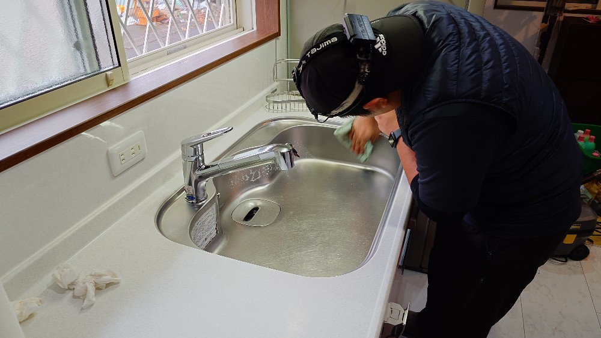
千葉県流山市のINM様一戸建ての半年毎定期で実施する水回りプレミアムクリーニングを実施しました!INM様一戸建ての水回りは、ご家族の人数も多く皆さんとても元気で活発なファミリーさんでいらっしゃいまして、どうしても半年経つと各所に堆積汚れが出てしまいます事から、リピーターさん特別価格、半年定期特別対応にてずっとサポートさせて頂いております。DAIZENプロフェッショナルメソッドクリーニングを半年毎に実施しているため、水回りの芯には堆積汚れが固着することはなく、じっくり時間をかけて油汚れ、カビ汚れ、水垢汚れ、石鹸カス汚れ、トイレの尿石汚れを丁寧にリムーブしていくと、従来の美しい各所各機器の本来の輝きが復元されます。INM様も毎回大変喜んで頂いております!ありがとうございました。
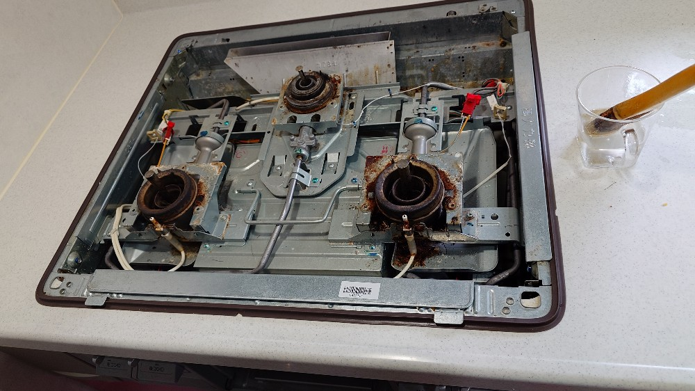
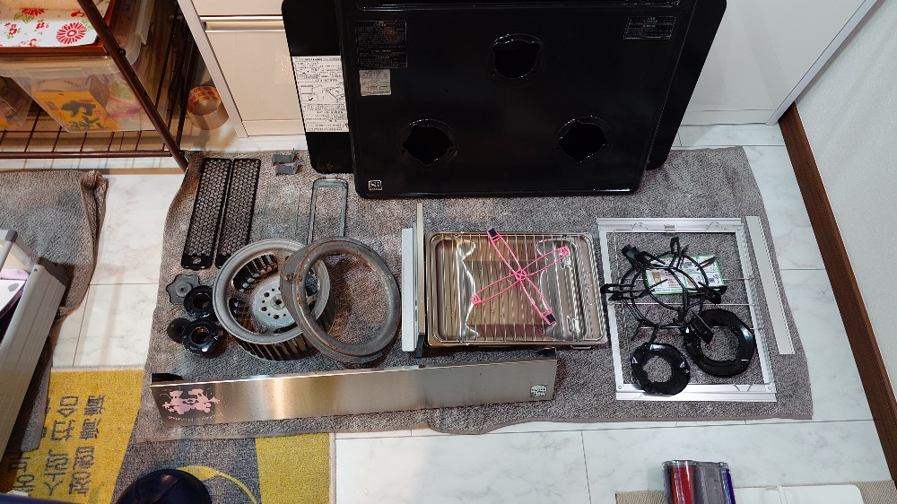
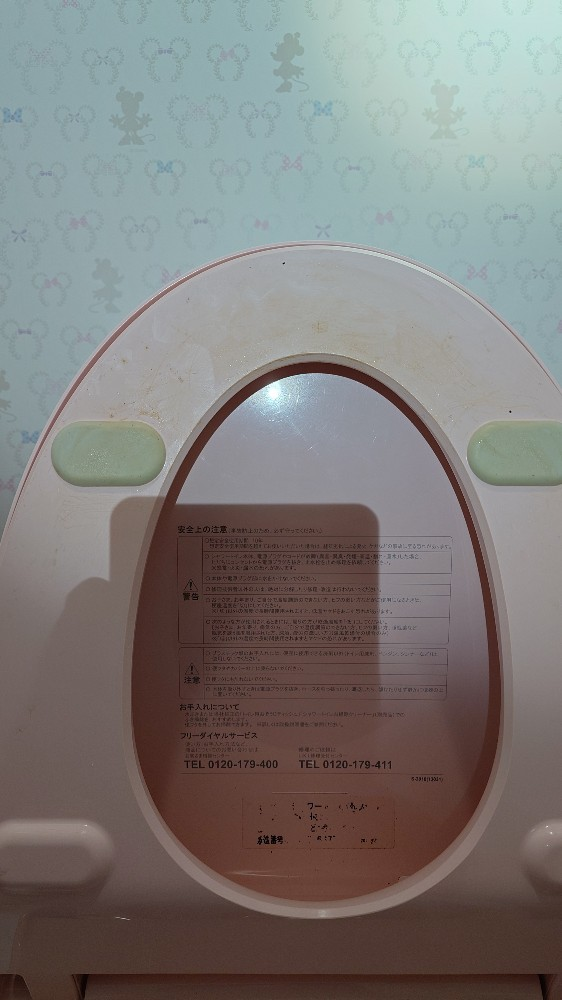
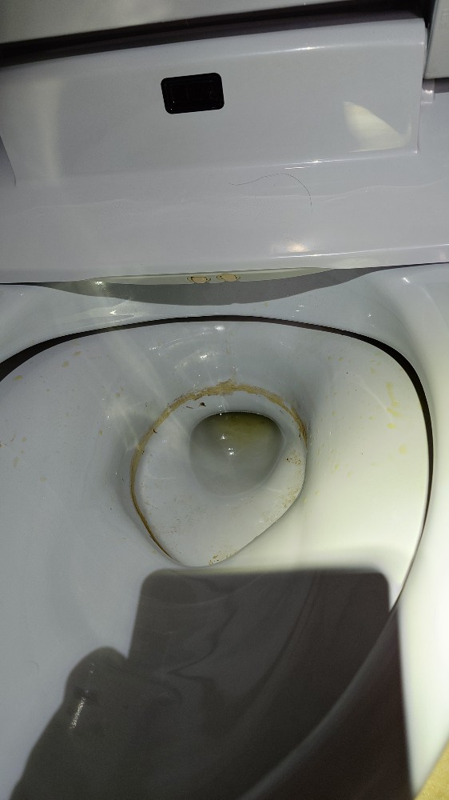
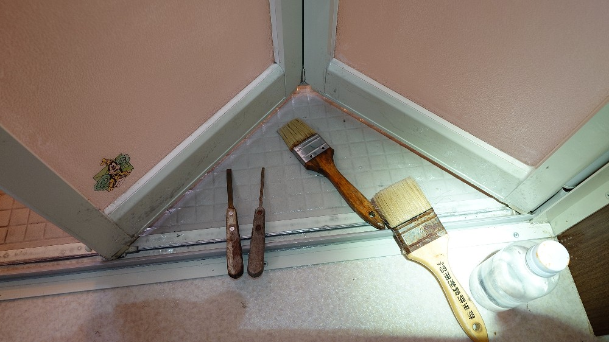

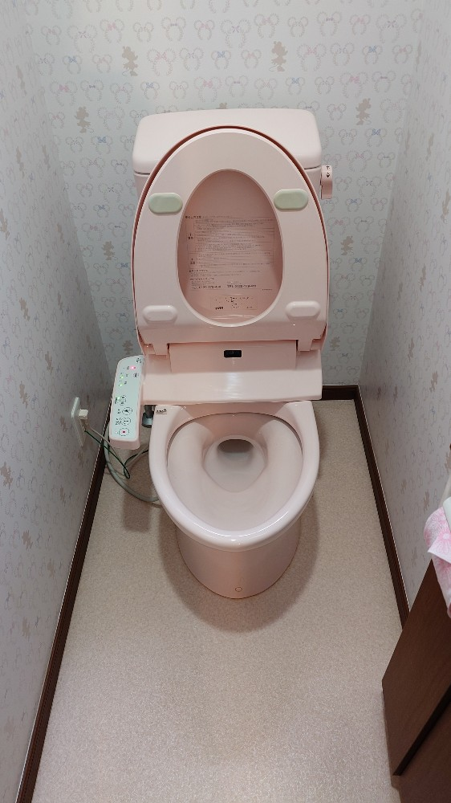
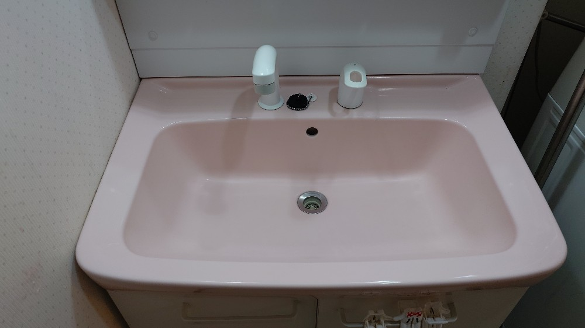
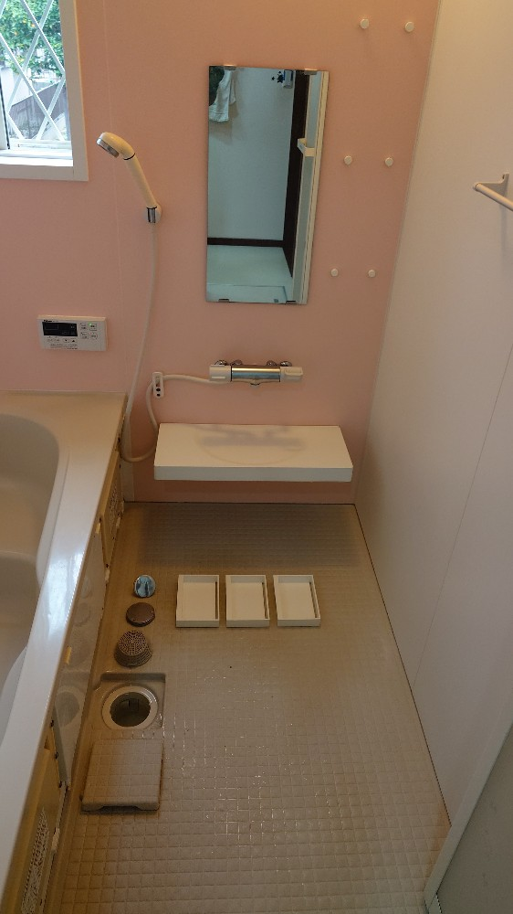
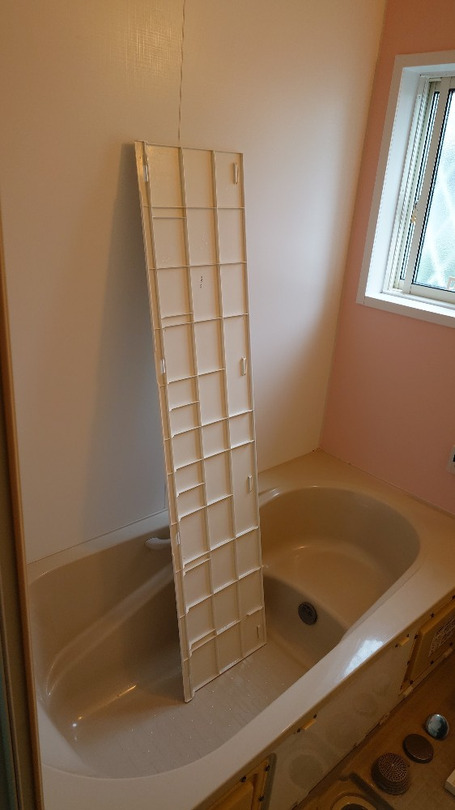
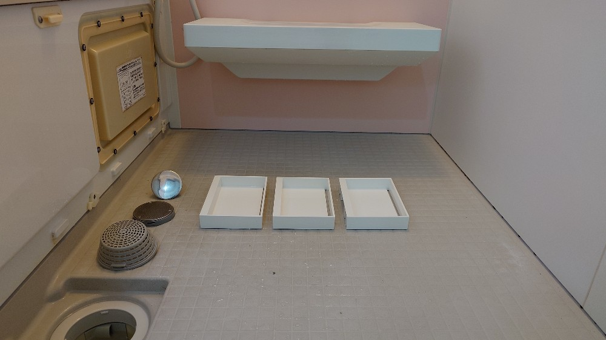
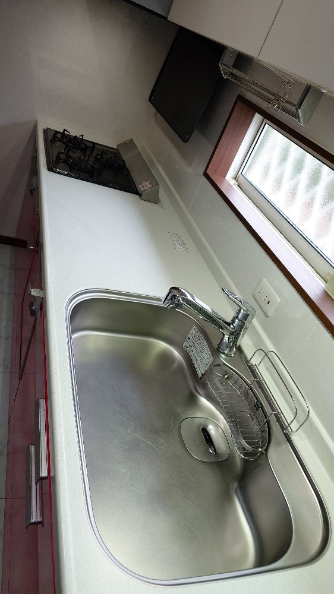
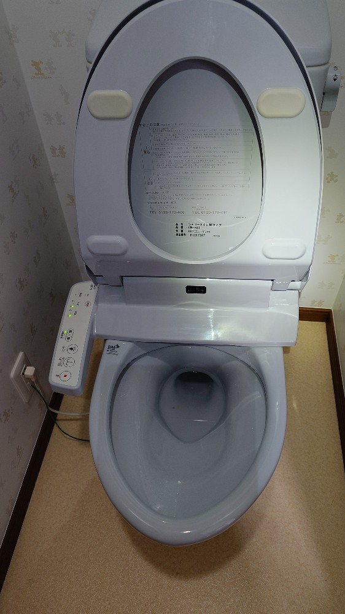